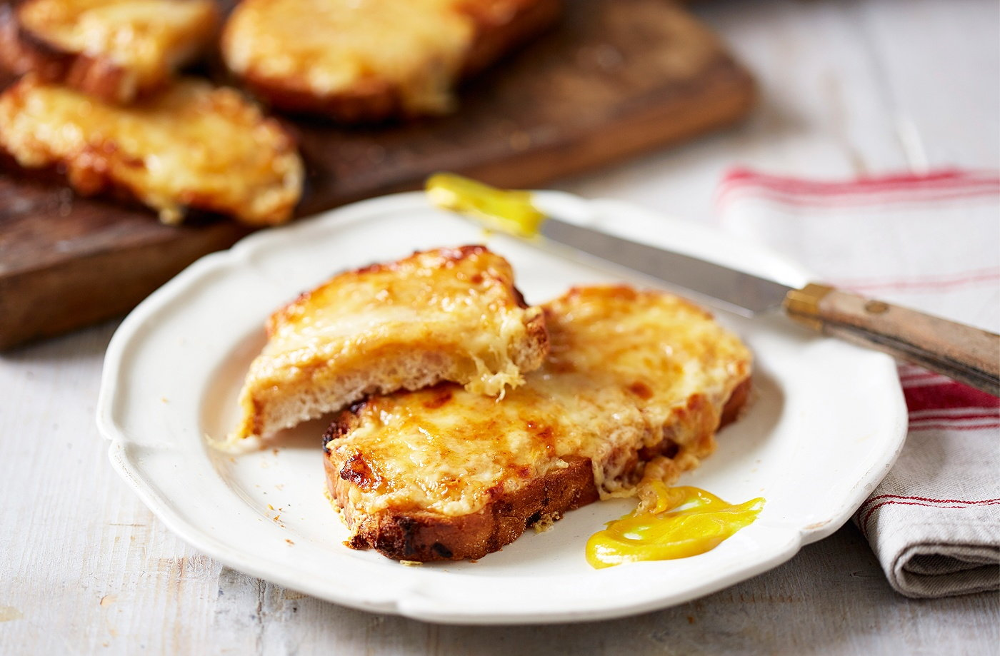

Cheese on Toast

Cheese on toast makes a delicious lunch
An absolute classic, the perfect lunch on a busy day.
The ingredients list and recipe instructions can be found below. Makes 1 portion.
Cheesey does it!
Ingredients
- 50g extra mature cheddar
- 2 thick slices of bread, white bloomer preferred
- Worcestershire sauce (optional)
Steps
- Turn on grill.
- Place slices of bread into toaster for 1 minute at low toasting setting.
- Grate the cheddar.
- Remove bread from toaster and place grated cheese of one side of each slice of bread.
- Place bread under grill, cheesey side up, until cheese is melting and bubbling.
- Optional: Add Worcestershire sauce for an extra kick!